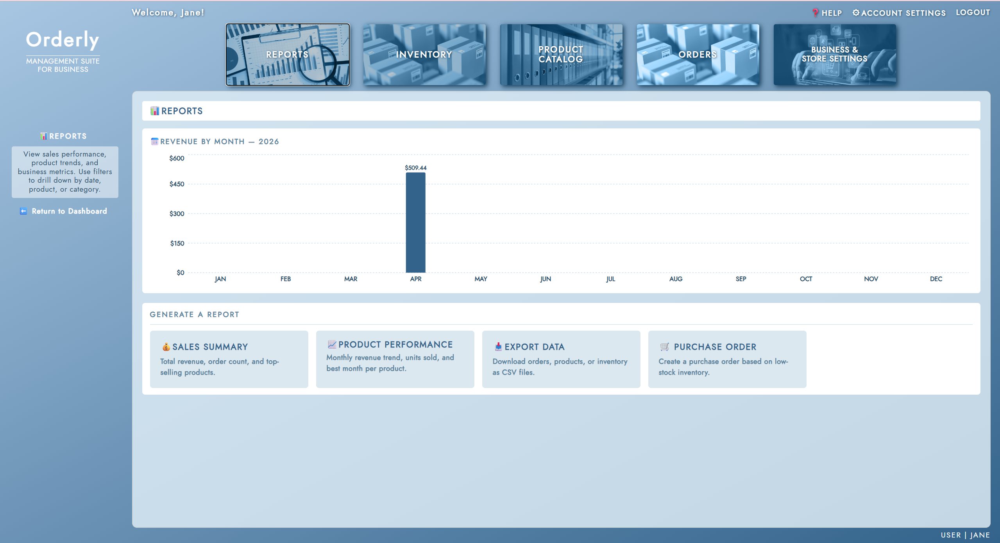

The Reports Dashboard is the central hub for all reporting and analytics features in Orderly. It opens with a bar chart showing your revenue by month for the current calendar year, giving you an at-a-glance view of how the business is performing across the year. Bars with no revenue are shown as empty — only months with at least one completed order are displayed with a value label.
Clicking any bar on the chart navigates directly to the Sales Summary page filtered to that month, so you can drill into a specific period without having to set filters manually.
Below the chart, four navigation cards link to the main reporting tools: Sales Summary for revenue and order totals, Product Performance for per-product trend data, Export Data for downloading reports as CSV files, and Purchase Order for generating a restock order based on low-stock inventory. Each of these is described in its own section of this manual.
The Sales Summary report shows your total revenue and order volume for a selected period, along with a ranked breakdown of every product's sales performance. At the top of the page, three summary tiles display Total Revenue, Units Sold, and your Top Selling Product for the period, including that product's total revenue and unit count.
Below the summary tiles, a bar chart visualises revenue over time. When no month filter is applied, the chart plots revenue by month across the selected year. When a specific month is selected, the chart switches to a daily view, showing revenue for each day within that month. Hovering over any bar shows a tooltip with the exact revenue and order count for that period.
The Sales by Product table below the chart lists every product and variant sold during the period, ranked by units sold. Each row shows the product name, variant, unit price, units sold, and total revenue generated. The top three rows are highlighted in gold, silver, and bronze to make your best performers easy to identify. You can sort the table by any column by clicking the column header, and filter the list by typing in the search bar.
Use the Export button to download the current report as a CSV file, or Print to send it to a printer or save it as a PDF.
The Product Performance report lets you dig into the sales history of individual products. The default view is a ranked table of all products, showing each product's name, variant, category, units sold, and total revenue for the selected period. As with Sales Summary, the top three performers are highlighted in gold, silver, and bronze. You can sort by any column and filter by category using the category dropdown that appears when no individual product is selected.
To view the full performance history for a specific product, either click its row in the rankings table or select it from the product dropdown in the filter bar. This opens the product detail view, which shows three summary tiles — Total Revenue, Units Sold, and Best Period (the month or day with the highest revenue) — followed by a revenue trend chart and a full breakdown table. The breakdown table lists each period as a separate row with its unit and revenue totals, so you can see exactly how sales have been distributed over time.
The trend chart is monthly by default when viewing a full year, and switches to a daily breakdown when a specific month is selected. This allows you to identify which days within a month drove the most revenue for a given product. To return to the rankings table, clear the product selection from the dropdown or click the × Clear Filters button.
Both Sales Summary and Product Performance share the same filtering system. A Year dropdown and a Month dropdown appear in the filter bar at the top of each page. The year dropdown is populated with all years that have at least one order, and the month dropdown shows only the months within the selected year that have order data.
Selecting a year without choosing a month shows year-to-date data for that year — the chart displays one bar per month, and the summary tiles and table reflect the full year. Selecting a month drills down to that specific month — the chart switches to a daily view, and all figures reflect that month's data only. Clearing the month filter reverts to the year view. Clearing both filters shows all-time data across every year on record.
The period label displayed below the filter bar always reflects the active selection, so you can confirm at a glance what data is being shown. To reset all filters at once, click the × Clear Filters button.
↑ Back to top